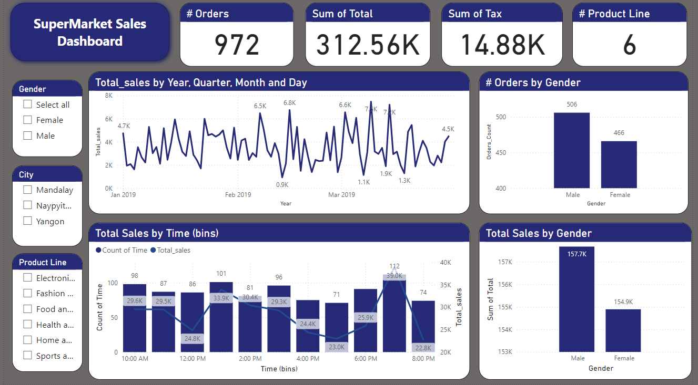

Mind Matters: Mental Support System
• Developed AI models to classify user-submitted text into depression categories, enabling users to express emotions effectively.
• Leveraged natural language processing techniques for data preprocessing and achieved high classification accuracy: 84% for BERT (English) and 88% for MARBERT (Arabic).
• Deployed models into a mobile application using REST API, providing accessible support for users in English and Arabic.
• Built a chatbot for enhanced user interaction and mental health support.

Supermarket Sales Analysis
• Optimized supermarket sales data from three cities in Myanmar using data wrangling, predictive modeling, and interactive dashboards.
• Analyzed key data insights to improve customer satisfaction, increase sales, and reduce churn.
• Performed data wrangling to ensure data cleanliness and tidiness by addressing missing values and inconsistencies.
• Designed and developed an interactive dashboard to help users quickly understand sales performance across various product categories.
• Supported data-driven decision-making by providing a clear view of sales trends and product performance.
Pneumonia Detection
• Developed a deep learning model for pneumonia detection using X-ray images.
• Implemented Grad-CAM to visualize and interpret the model's decision-making process.
• Highlighted critical regions in X-rays contributing to predictions for improved interpretability.
Pediatric Thoracic Disease Prediction
• Developed a web application to assist doctors and patients with scheduling appointments, uploading prescriptions, and accessing patient history for better decision-making.
• Designed and implemented a deep learning model to predict pediatric thoracic diseases from DICOM files, achieving a training accuracy of 80% with Xception and 72.9% with EfficientNet.
• Applied comprehensive data preprocessing techniques, including noise removal, data augmentation (horizontal/vertical flips, random rotations, cropping), resizing images to 150x150, color jitter, and contrast enhancement to improve model performance.
Optimizing Warehouse Inventory Management
• Developed an interactive Excel dashboard to enhance warehouse inventory management.
• Monitored stock levels and efficiently tracked missing items to reduce discrepancies.
• Provided actionable insights by summarizing key metrics and trends.
Energy Consumption
• Conducted a comprehensive analysis of energy usage data to uncover insights and understand the impact of various factors on energy consumption and costs.
• Determined optimal thresholds for shutting down cells to achieve energy savings and cost reduction.
• Performed data exploration, cleaning, and transformation to ensure high-quality data for analysis.
• Conducted hypothesis testing to validate assumptions and identify significant relationships in the data.